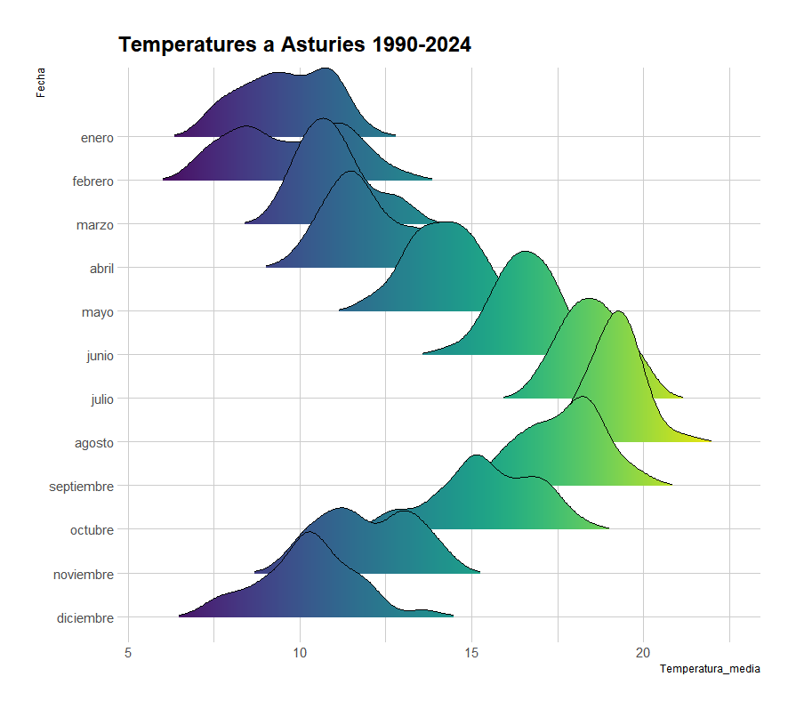

Aquesta visualització ha estat publicada a la plataforma Flourish, al següent enllaç:
Enllaç a FlourishLes dades han sigut obtingudes de l'INE (Instituto Nacional de Estadística) del següent dataset: Enllaç a l'INE
Aquesta visualització ha estat creada amb codi Python,
Les dades han sigut obtingudes de l'INE (Instituto Nacional de Estadística) de la següent pàgina web: Enllaç a l'INE
Aquesta visualització ha estat creada amb codi de llenguatge R,
Les dades han sigut obtingudes de la SADEI (SOCIEDAD ASTURIANA DE ESTUDIOS ECONÓMICOS E INDUSTRIALES) en la següent web: Enllaç a SADEI
